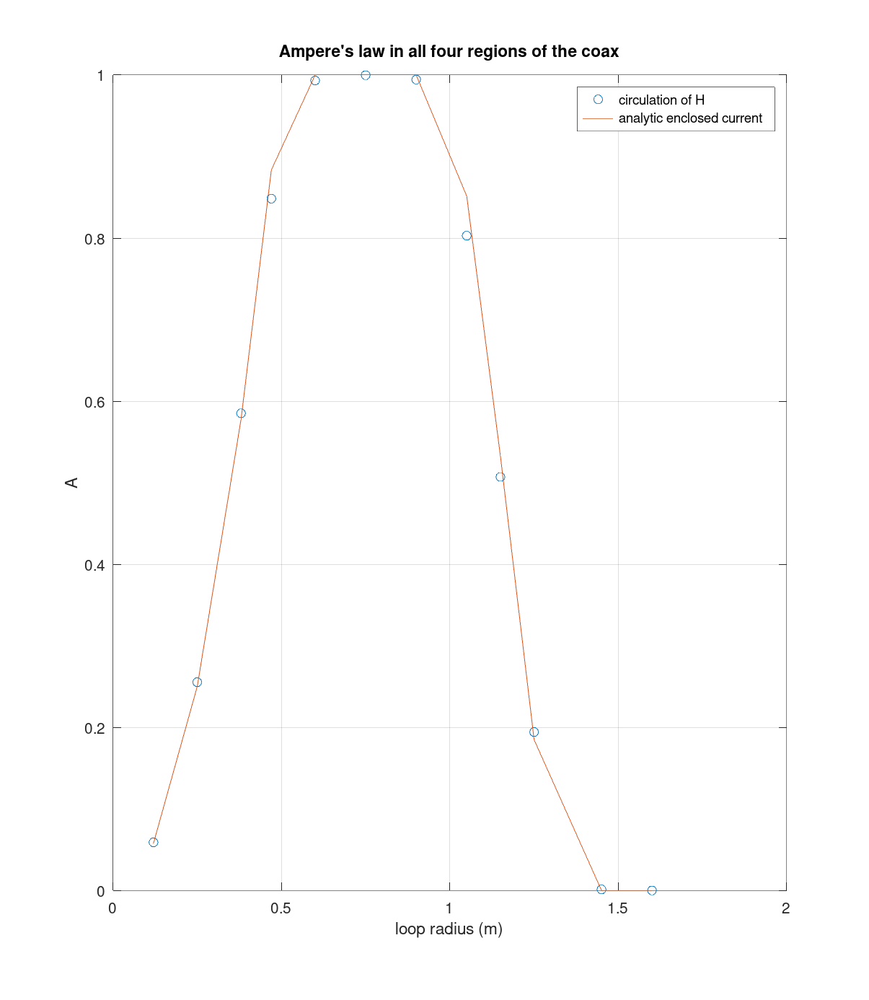
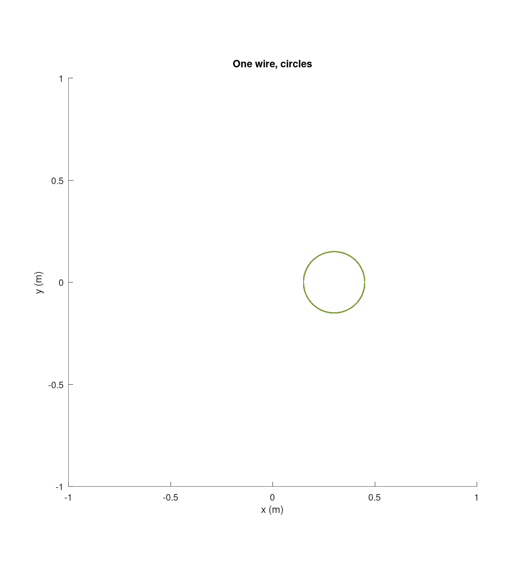
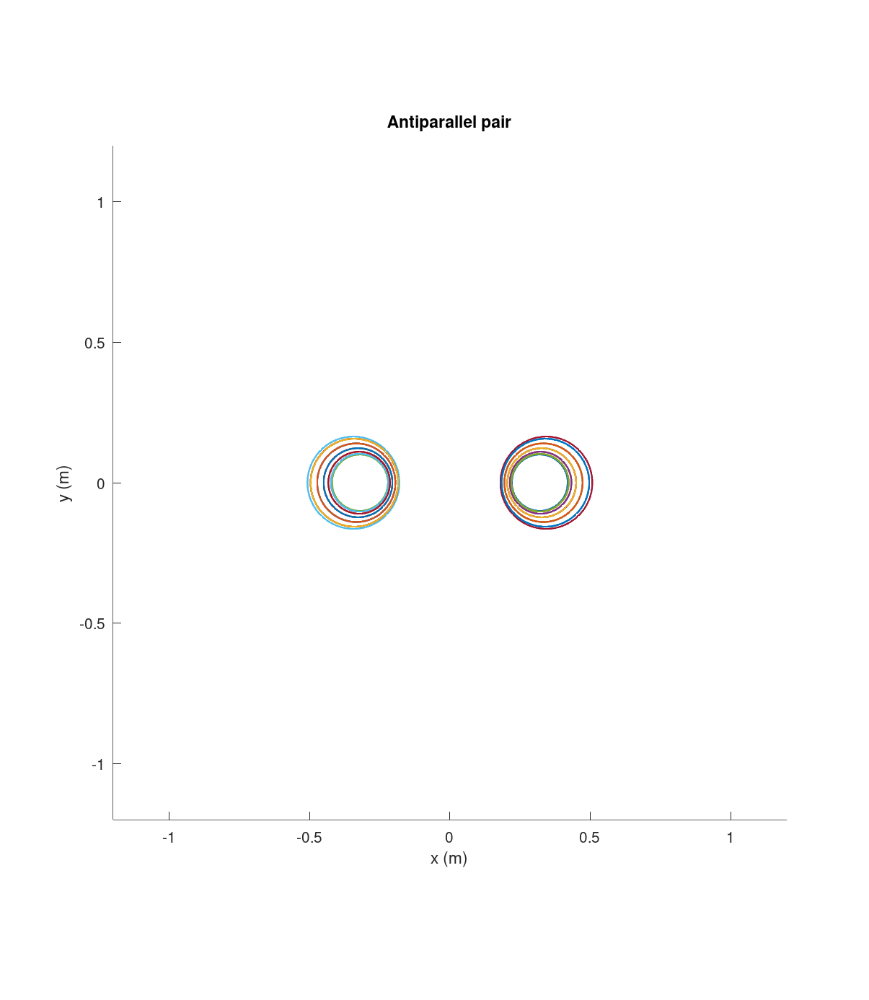

Team 3. Carissa McWilliams, Mitchell Nazareth, Amelia Harris, and Hasan Ali.
clear; close all; mu0 = em.const.mu0();
The API has no volume current constructor, and none is needed. A uniform volume current is a merge of many parallel line currents, each carrying its share of the total. The inner conductor carries +1 A, the shell returns it.
I = 1; a = 0.5; b = 1.0; c = 1.3; L = 40; nel = 400; [gx, gy] = meshgrid(-1.3:0.1:1.3); rin = hypot(gx, gy) <= a; rsh = hypot(gx, gy) >= b & hypot(gx, gy) <= c; xin = gx(rin); yin = gy(rin); xsh = gx(rsh); ysh = gy(rsh); srcs = cell(1, numel(xin) + numel(xsh)); for k = 1:numel(xin) x0 = xin(k); y0 = yin(k); srcs{k} = em.src.lineCurrent(I/numel(xin), @(t)[x0+0*t y0+0*t t], [-L L], nel); end for k = 1:numel(xsh) x0 = xsh(k); y0 = ysh(k); srcs{numel(xin)+k} = em.src.lineCurrent(-I/numel(xsh), @(t)[x0+0*t y0+0*t t], [-L L], nel); end coax = em.src.merge(srcs{:}); fprintf('%d filaments inside, %d in the shell, %d elements total\n', ... numel(xin), numel(xsh), size(coax.pos,1)); FH = @(r) em.field.H(coax, r);
77 filaments inside, 224 in the shell, 120400 elements total
rho = [0.12 0.25 0.38 0.47 0.6 0.75 0.9 1.05 1.15 1.25 1.45 1.6]'; Ienc = zeros(size(rho)); Circ = zeros(size(rho)); IencRef = @(r) I*(r<=a).*(r.^2/a^2) + I*(r>a & r<b) + ... I*(r>=b & r<=c).*(1 - (r.^2 - b^2)/(c^2 - b^2)) + 0*(r>c); for k = 1:numel(rho) rk = rho(k); loop = @(t)[rk*cos(t) rk*sin(t) zeros(size(t))]; Circ(k) = em.field.circulation(FH, loop, [0 2*pi], 96); Ienc(k) = IencRef(rk); end figure; plot(rho, Circ, 'o', rho, Ienc, '-'); grid on xlabel('loop radius (m)'); ylabel('A') legend('circulation of H', 'analytic enclosed current') title('Ampere''s law in all four regions of the coax') fprintf('largest deviation = %.3f A\n', max(abs(Circ - Ienc))); fprintf('outside the cable, circulation = %.3e A (consistent with zero)\n', Circ(end));
largest deviation = 0.048 A outside the cable, circulation = 1.006e-05 A (consistent with zero)

rk = 0.7;
circle = em.field.circulation(FH, @(t)[rk*cos(t) rk*sin(t) 0*t], [0 2*pi], 96);
sq = 0; s2 = 0.7;
sides = { @(t)[t -s2+0*t 0*t], @(t)[s2+0*t t 0*t], @(t)[-t s2+0*t 0*t], @(t)[-s2-0*t -t 0*t] };
for k = 1:4
sq = sq + em.field.circulation(FH, sides{k}, [-s2 s2], 48);
end
irr = em.field.circulation(FH, ...
@(t)[0.7*(1+0.1*sin(3*t)).*cos(t) 0.68*(1+0.08*cos(2*t)).*sin(t) 0*t], [0 2*pi], 128);
fprintf('circle %.4f A\nsquare %.4f A\nirregular %.4f A\n', circle, sq, irr);
circle 0.9997 A square 0.9975 A irregular 0.9988 A
Closed surface integral of B over three surfaces, for a current ring, including a surface the ring passes through.
ring = em.src.lineCurrent(1, @(t)[cos(t) sin(t) 0*t], [0 2*pi], 400);
FB = @(r) em.field.B(ring, r);
sphS = @(th,ph) 0.6*[sin(th)*cos(ph) sin(th)*sin(ph) cos(th)];
P1 = em.field.flux(FB, sphS, [0 pi], [0 2*pi], 60, 120);
cubeF = 0;
faces = { @(u,v)[u v 0.4*ones(size(u))], @(u,v)[v u -0.4*ones(size(u))], ...
@(u,v)[v 0.4*ones(size(u)) u], @(u,v)[u -0.4*ones(size(u)) v], ...
@(u,v)[ 0.4*ones(size(u)) u v], @(u,v)[-0.4*ones(size(u)) v u] };
for k = 1:6
cubeF = cubeF + em.field.flux(FB, faces{k}, [-0.4 0.4], [-0.4 0.4], 50, 50);
end
sphCut = @(th,ph) [1 0 0] + 0.5*[sin(th)*cos(ph) sin(th)*sin(ph) cos(th)];
P3 = em.field.flux(FB, sphCut, [0 pi], [0 2*pi], 60, 120);
Bscale = em.vec.mag(em.field.B(ring, [0 0 0])) * pi * 0.6^2;
fprintf('sphere %.3e Wb\n', P1);
fprintf('cube %.3e Wb\n', cubeF);
fprintf('sphere cutting the ring %.3e Wb\n', P3);
fprintf('scale for comparison, B(0) times a disk area = %.3e Wb\n', Bscale);
error: operator *: nonconformant arguments (op1 is 7200x1, op2 is 7200x1)
in:
ring = em.src.lineCurrent(1, @(t)[cos(t) sin(t) 0*t], [0 2*pi], 400);
FB = @(r) em.field.B(ring, r);
sphS = @(th,ph) 0.6*[sin(th)*cos(ph) sin(th)*sin(ph) cos(th)];
P1 = em.field.flux(FB, sphS, [0 pi], [0 2*pi], 60, 120);
cubeF = 0;
faces = { @(u,v)[u v 0.4*ones(size(u))], @(u,v)[v u -0.4*ones(size(u))], ...
@(u,v)[v 0.4*ones(size(u)) u], @(u,v)[u -0.4*ones(size(u)) v], ...
@(u,v)[ 0.4*ones(size(u)) u v], @(u,v)[-0.4*ones(size(u)) v u] };
for k = 1:6
cubeF = cubeF + em.field.flux(FB, faces{k}, [-0.4 0.4], [-0.4 0.4], 50, 50);
end
sphCut = @(th,ph) [1 0 0] + 0.5*[sin(th)*cos(ph) sin(th)*sin(ph) cos(th)];
P3 = em.field.flux(FB, sphCut, [0 pi], [0 2*pi], 60, 120);
Bscale = em.vec.mag(em.field.B(ring, [0 0 0])) * pi * 0.6^2;
fprintf('sphere %.3e Wb\n', P1);
fprintf('cube %.3e Wb\n', cubeF);
fprintf('sphere cutting the ring %.3e Wb\n', P3);
fprintf('scale for comparison, B(0) times a disk area = %.3e Wb\n', Bscale);
J = I / (pi*a^2); cin = em.op.curl(FH, [0.25 0 0], 0.15); cout = em.op.curl(FH, [0.75 0 0], 0.1); dB1 = em.op.div(FB, [0.3 0.2 0.4], 1e-4); dB2 = em.op.div(FB, [2 1 1], 1e-4); fprintf('curl H inside conductor z component = %.4f J = %.4f A/m^2\n', cin(3), J); fprintf('curl H in the dielectric z component = %.4f (consistent with zero)\n', cout(3)); fprintf('div B near the ring = %.3e, far away = %.3e\n', dB1, dB2); % The derivative step for the curl must average over several filaments, % which is why h = 0.15 m is passed rather than the default.
error: 'FB' undefined near line 1, column 18
in:
J = I / (pi*a^2);
cin = em.op.curl(FH, [0.25 0 0], 0.15);
cout = em.op.curl(FH, [0.75 0 0], 0.1);
dB1 = em.op.div(FB, [0.3 0.2 0.4], 1e-4);
dB2 = em.op.div(FB, [2 1 1], 1e-4);
fprintf('curl H inside conductor z component = %.4f J = %.4f A/m^2\n', cin(3), J);
fprintf('curl H in the dielectric z component = %.4f (consistent with zero)\n', cout(3));
fprintf('div B near the ring = %.3e, far away = %.3e\n', dB1, dB2);
% The derivative step for the curl must average over several filaments,
% which is why h = 0.15 m is passed rather than the default.
wire1 = em.src.lineCurrent(1, @(t)[0.3+0*t 0*t t], [-40 40], 400); wire2 = em.src.lineCurrent(-1, @(t)[-0.3+0*t 0*t t], [-40 40], 400); pair = em.src.merge(wire1, wire2); th = (0:30:330)'; figure; em.viz.streamlines(@(r) em.field.H(wire1, r), [-1 1], [-1 1], ... [0.3+0.15*cosd(th) 0.15*sind(th)], struct('title', 'One wire, circles')); figure; em.viz.streamlines(@(r) em.field.H(pair, r), [-1.2 1.2], [-1.2 1.2], ... [[0.3+0.12*cosd(th) 0.12*sind(th)]; [-0.3+0.12*cosd(th) 0.12*sind(th)]], ... struct('title', 'Antiparallel pair')); % Field lines in both figures form closed loops, which agrees with % the fact that the divergence of the magnetic flux density is zero. % Unlike electric fields, magnetic fields do not have sources or sinks % where field lines can begin or end. In Lab 3, electric field lines could % begin on positive charges and end on negative charges because electric % charge creates divergence in the electric displacement field. The magnetic % field plots show the direction and overall shape of the field, but they % do not give an accurate numerical representation of its magnitude. % The quiver plots from Lab 3 were useful for comparing both the direction % and magnitude of a field at specific points.


The coaxial cable allowed Ampere's law to be tested in four different regions using the same geometry. Inside the inner conductor, the enclosed current increases with the area of the Amperian loop. Between the conductors, the loop encloses the full inner current, while inside the outer shield the enclosed current gradually decreases as the return current is included. Outside the shield, the total enclosed current is zero because the inner and outer currents are equal and opposite. This last region is especially important because it shows that the magnetic field can exist outside the cable while its total circulation is still zero. This confirms that the return current cancels the enclosed current, as predicted by Ampere's law.
The filament model approximates a continuous current distribution using individual line currents, so small differences were expected near the conductor edges. Choosing an appropriate step size for the curl calculation was also important because values that were too small produced less reliable numerical results. After adjusting the calculations, the results were consistent with the expected electromagnetic relationships.
runTests
EECE 306 toolbox test suite
--------------------------------------------------------------
11.3.0
eps0 = 8.8541878128e-12 F/m
mu0 = 1.2566370614e-06 H/m
c0 = 2.9979245808e+08 m/s
eta0 = 376.730314 ohm
Derived constant checks passed.
mag([3 4 0]) = 5 (expect 5 exactly)
unit([3 4 0]) =
0.6000 0.8000 0
unit([0 0 0]) (expect all NaN) =
NaN NaN NaN
angle perpendicular = 1.5707963267949 (expect pi/2)
angle antiparallel = 3.14159265358979, real = 1 (expect pi, 1)
fromTo([1 1 1],[2 3 4]) =
1 2 3
mag input 100x3 output [100 1]
unit input 100x3 output [100 3]
angle input 100x3 output [100 1]
fromTo input 100x3 output [100 3]
PASS test_lab01 0.03 s
spherical roundtrip max error = 5.947e-15
cylindrical roundtrip max error = 2.047e-15
c2sph([0 0 1]) =
1 0 0
c2sph([0 0 -1]) =
1.0000 3.1416 0
phi in the four quadrants = 0.7854 2.3562 3.9270 5.4978 rad
all inside [0, 2*pi) = 1
vector roundtrip (spherical pair) max error = 8.882e-16
magnitude change under conversion max = 8.882e-16
vector roundtrip (cylindrical pair) max error = 6.280e-16
at (0, 5, 0), (Ar, Atheta, Aphi) =
3.0000e+00 1.8370e-16 -2.0000e+00
at (4, 0, 0), (Ar, Atheta, Aphi) =
2.0000e+00 1.2246e-16 3.0000e+00
PASS test_lab02 0.03 s
r (m) relative error
1.0000 0
2.0000 0
3.0000 0
4.0000 0
5.0000 0
6.0000 0
7.0000 0
8.0000 0
9.0000 0.0000
10.0000 0
max |Ex| on bisector = 0.000e+00 V/m
max |E| on the same plane = 6.298e+02 V/m
|E(r)| / |E(2r)| = 8.0003 (expect near 8 for a dipole)
em.field.E on 5000 points took 0.001 s (requirement, under 2 s)
PASS test_lab03 0.33 s
test_lab04 checks complete
PASS test_lab04 0.37 s
div D = 1.003980e-06, rho_v = 1.000000e-06
test_lab05 checks complete
PASS test_lab05 0.34 s
warning: The represented source extent is at least 50 times the median nearest-element distance for these observation points. Check finite extent; V = 0 at infinity is not valid for an ideal unbounded source.
warning: called from
V at line 51 column 9
test_lab06 at line 232 column 1
run at line 78 column 7
runTests at line 73 column 9
publish>eval_code_helper at line 1081 column 3
publish>eval_code at line 997 column 11
publish at line 402 column 5
warning: The represented source extent is at least 50 times the median nearest-element distance for these observation points. Check finite extent; V = 0 at infinity is not valid for an ideal unbounded source.
warning: called from
V at line 51 column 9
test_lab06 at line 235 column 1
run at line 78 column 7
runTests at line 73 column 9
publish>eval_code_helper at line 1081 column 3
publish>eval_code at line 997 column 11
publish at line 402 column 5
test_lab06 checks complete
PASS test_lab06 1.41 s
Lab 7 MMS error 8.224e-05; observed order 2.055; Gauss-law relative error 0.000
test_lab07 checks complete
PASS test_lab07 90.14 s
Lab 8 parallel-plate rel err 1.82e-16; two-layer harmonic order unresolved (aligned 1-D case); arithmetic order 0.983; coax rel err 0.0149
test_lab08 checks complete
PASS test_lab08 5.50 s
Lab 9 loop center Hz 2.875 A/m; wire ratio 0.99228 at h/rho=8.0; solenoid ratio 0.99123 at h/a=15.0; 5000-point H 0.028 s
test_lab09 checks complete
PASS test_lab09 0.16 s
Coax circulation [inside, dielectric, shield, outside] = 0.2428 0.9999 0.4118 0.0002 A
Path circulations [circle square irregular] = 0.99986 0.99906 0.99858 A
B flux, finite wire [sphere hemisphere+disk cube] = -3.310e-11 8.160e-11 8.582e-13 Wb (reference scale 1.236e-06 Wb)
B flux, circular loop [sphere hemisphere+disk cube] = 1.829e-10 -6.730e-11 -1.257e-11 Wb (reference scale 1.078e-06 Wb)
B flux through sphere cutting current loop = 5.842e-20 Wb (scale 5.420e-08 Wb)
curl H inside = [-0.0000 0.0000 1.2176], Jz = 1.2732 A/m^2
curl H in dielectric magnitude = 1.205e-02 A/m^2
FAIL test_lab10 12.16 s Curl of an electrostatic point-charge field should vanish.
--------------------------------------------------------------
9 passed, 1 failed, 10 total
Re-run with runTests('verbose', true) for full messages.